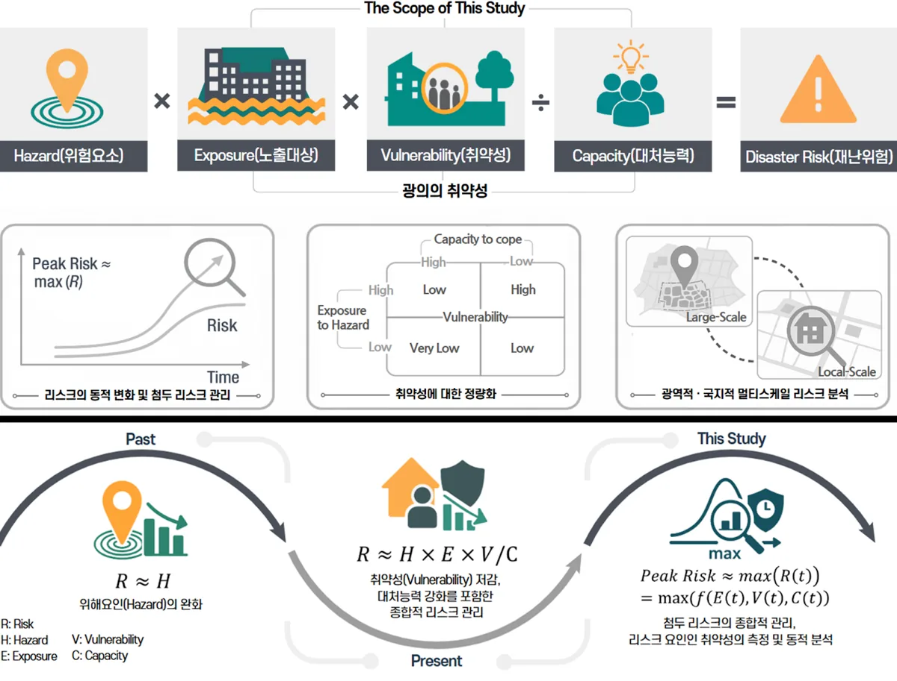
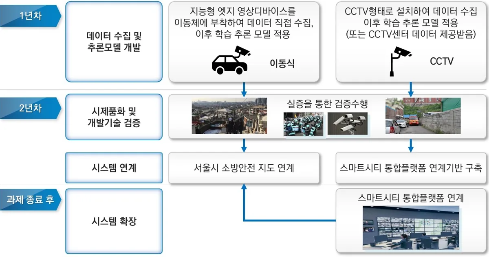
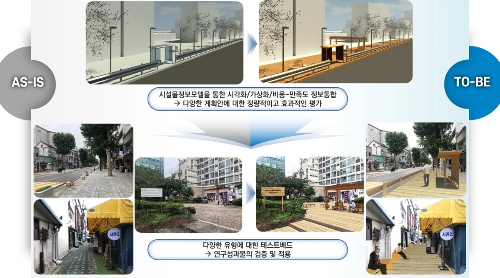
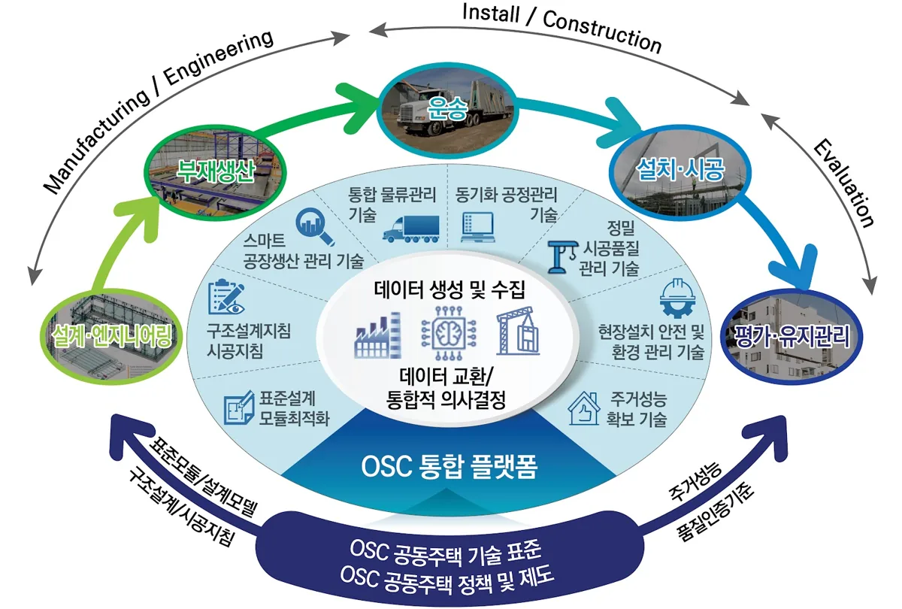
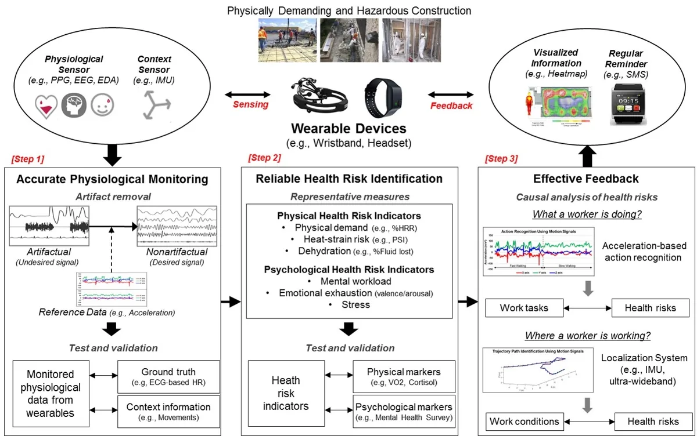

2025-2028
Paradigm for Peak Disaster Risk Management Based on Quantitative Tracking of Urban Spatial Vulnerability Changes
도시공간 취약성 변화 정량 추적 기반 첨두재난리스크(Peak Risk) 관리 패러다임 구축 및 핵심 기술 개발

Enhancing our quality of life through sustainable, resilient, and intelligent built environment and cities
2025-2028
도시공간 취약성 변화 정량 추적 기반 첨두재난리스크(Peak Risk) 관리 패러다임 구축 및 핵심 기술 개발

2023-2028
컴퓨터 비전 기반 보행환경 만족도 정량 추정을 통한 환경개선안 자동 추천 및 이미지 생성 기술 개발
2023-2025
국산목질계 바닥의 유효성 검증 및 설계 가이드라인 개발
2022-2026
빅데이터 기반 인공지능을 활용한 도시계획기술 개발
2022-2023
AI 추론을 통한 소방 특수차량의 재난현장 접근성 분석 기술 개발

2021-2023
도시 목조화거리 조성계획을 위한 3D시설물 정보모델 및 정량적 효과분석 기술 개발

2020-2023
Off-Site Construction 기반 공동주택 생산시스템 혁신기술개발

2022-2023
(연구기획과제) AI·빅데이터 기반 공공임대주택 사업지원 통합플랫폼 구축 기획
2023
(위탁연구) 목조건축 연관산업별 이해관계 구명 용역
2020-2021
인간행태감지 및 행태시퀀스 분석을 통한 도시이상상황 식별기술개발
2018-2019
행동시퀀스 분석을 통한 3D CNN 기반 무인소매점 절도행위 자동감지 연구
2017-2020
분산형 센서-시뮬레이션 네트워크를 활용한 도시재난대응 플랫폼 기반기술 구축
2017-2019
웨어러블 디바이스 기반 실시간 모니터링을 활용한 건설작업자 안전보건관리

2018
경주,포항지역 건축문화재 지진위험지도 제작을 위한 기초연구